КЫРГЫЗ РЕСПУБЛИКАСЫНЫН
УЛУТТУК БАНКЫ
| Акча бирдиги | 08.06.2025 | 09.06.2025 |
|---|---|---|
| USD | 87,4500 | 87,4500 |
 EUR EUR |
99,6799 | 99,8285 |
| 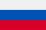 RUB | 1,1105 | 1,1029 |
 KZT KZT |
0,1708 | 0,1714 |
 CNY CNY |
12,1655 | 12,1777 |
2025-жылдын айлары боюнча Кыргызстандагы инфляциянын деңгээли:
Үчтүн айы 2025: 6.7%
Бирдин айы 2025: 7.0%
Жалган куран 2025: 6.9%
Чын куран 2025: 7.1%
Бугу айы 2025: 7.7%
Кыргызстан тыйындары
| Сүрөт | Баасы | Материалы | Диаметри (мм) |
Калыңдыгы (мм) |
Салмагы (г) |
Чети | Дата | ||
|---|---|---|---|---|---|---|---|---|---|
| Алдыңкы бет | Арткы бет | чеканки | введения | ||||||
| 1 тыйын | жез | 14 | 0,95 | 1,0 | кесилген | 2008 | 1 Үчтүн айы 2008 | ||
| 10 тыйын | болот, жез | 15 | 1,15 | 1,3 | жылмакай | ||||
 |
 |
50 тыйын | 17 | 1,22 | 1,8 | ||||
 |
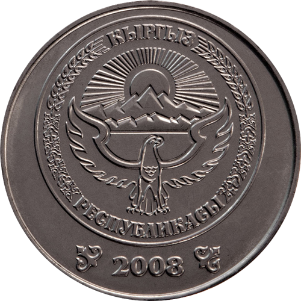 | 1 сом | болот, никель | 19 | 1,36 | 2,5 | кесилген | ||
| 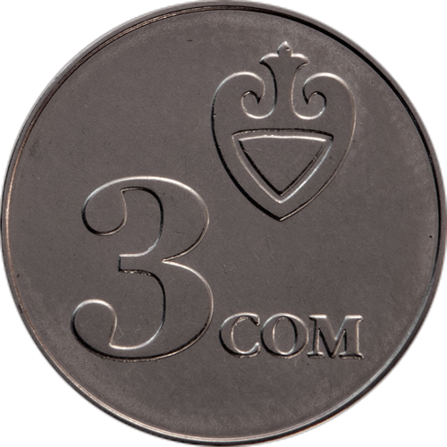 |  |
3 сом | 21 | 1,4 | 3,2 | ||||
| 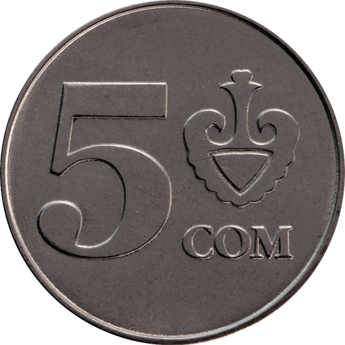 |  |
5 сом | 23 | 1,55 | 4,2 | ||||
 |
 |
10 сом | 24,5 | 1,65 | 5,4 | кесилген | 2009 | 1 Бештин айы 2009 | |
| кесилген жана «ОН СОМ — 10 СОМ» деген жазуусу |
2009 (2014) | 1 Аяк оона 2014 | |||||||
Кыргызстандын банкноттор галереясы (90-жылдардан бери)


1 тыйын (10 май 1993)
Башкы түсү кызыл. Алдыңкы бетинде бурчтарда сандык номинал "1" көрсөтүлгөн. Борбордо — күн нурунун фонунда бүркүт, тегерек орнаменталдык алкактын ичинде "Кыргыз Республикасы" жана "Бир тыйын" деген жазуулар бар. Алкандын четинде — микротекст. Төмөнкү оң бурчта — сериясы жана номери. Арткы бетинде да бурчтарда "1" номиналы көрсөтүлгөн. Борбордо — улуттук символика (күн, түндүк) жана тегерек ичинде "Кыргыз Республикасы", "Бир тыйын" деген жазуулар, микротекст менен коштолгон.


10 тыйын (10 май 1993)
Башкы түсү жашыл. Алдыңкы бетинде бурчтарда сандык номинал "1" көрсөтүлгөн. Борбордо — күн нурунун фонунда бүркүт, тегерек орнаменталдык алкактын ичинде "Кыргыз Республикасы" жана "Бир тыйын" деген жазуулар бар. Алкандын четинде — микротекст. Төмөнкү оң бурчта — сериясы жана номери. Арткы бетинде да бурчтарда "1" номиналы көрсөтүлгөн. Борбордо — улуттук символика (күн, түндүк) жана тегерек ичинде "Кыргыз Республикасы", "Бир тыйын" деген жазуулар, микротекст менен коштолгон.
 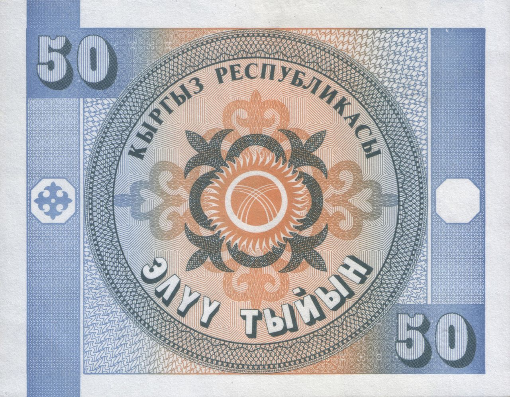
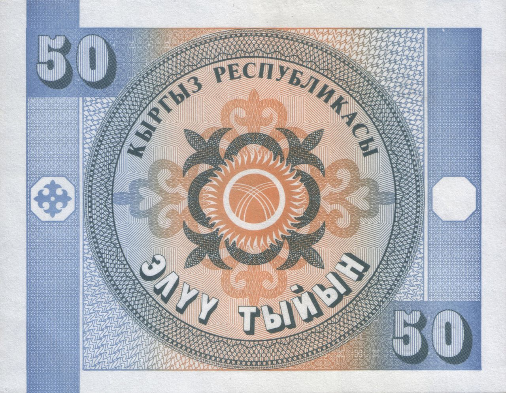
50 тыйын (10 май 1993)
Башкы түсү көк. Алдыңкы бетинде бурчтарда сандык номинал "1" көрсөтүлгөн. Борбордо — күн нурунун фонунда бүркүт, тегерек орнаменталдык алкактын ичинде "Кыргыз Республикасы" жана "Бир тыйын" деген жазуулар бар. Алкандын четинде — микротекст. Төмөнкү оң бурчта — сериясы жана номери. Арткы бетинде да бурчтарда "1" номиналы көрсөтүлгөн. Борбордо — улуттук символика (күн, түндүк) жана тегерек ичинде "Кыргыз Республикасы", "Бир тыйын" деген жазуулар, микротекст менен коштолгон.
1 сом (10 май 1993)
Алдыңкы бетинде жогору жакта "КЫРГЫЗСТАН БАНКЫ" деген жазуу жана "1 СОМ" цифрасы бар. Борбордун сол тарабында — сквозной регистр жана улуттук орнамент; оң тарабында — Манас эпосунун баатырынын эстелиги. Төмөндө — "1" цифрасы, "БИР СОМ" тексти, банкноттун сериясы жана номери кара сыя менен басылган. Сериясы бир цифра жана эки тамгадан турат, номери — сегиз цифра. Ак талаада Улуттук банктын төрагасынын кол тамгасы жайгашкан. Арткы бетинде жогору жакта "1 СОМ" жана "КЫРГЫЗСТАН БАНКЫ" жазуусу бар. Борбордо Манастын мавзолейи (XIV к.), горизонталдуу орнаменталдык тилкенин жээгинде "КЫРГЫЗСТАН БАНКЫ" деген микрошрифт. Оң жакта — сквозной регистр. Төмөндө — "БИР СОМ 1" тексти.

5 сом (10 май 1993)
Алдыңкы бетинде жогору жакта "КЫРГЫЗСТАН БАНКЫ" деген жазуу жана "5 СОМ" цифрасы бар. Борбордун сол тарабында — сквозной регистр жана улуттук орнамент; оң тарабында — Манас эпосунун баатырынын эстелиги. Төмөндө — "5" цифрасы, "БЕШ СОМ" тексти, банкноттун сериясы жана номери кара сыя менен басылган. Ак талаада Улуттук банктын төрагасынын кол тамгасы жайгашкан. Арткы бетинде жогору жакта "5 СОМ" жана "КЫРГЫЗСТАН БАНКЫ" жазуусу бар. Борбордо Манастын мавзолейи (XIV к.), горизонталдуу орнаменталдык тилкенин жээгинде "КЫРГЫЗСТАН БАНКЫ" деген микрошрифт. Оң жакта — сквозной регистр. Төмөндө — "БЕШ СОМ 5" тексти.


20 сом (10 май 1993)
Алдыңкы бетинде жогору жакта "КЫРГЫЗСТАН БАНКЫ" деген жазуу жана "20 СОМ" цифрасы бар. Борбордун сол тарабында — сквозной регистр жана улуттук орнамент; оң тарабында — Манас эпосунун баатырынын эстелиги. Төмөндө — "20" цифрасы, "ЖЫЙЫРМА СОМ" тексти, банкноттун сериясы жана номери кара сыя менен басылган. Ак талаада Улуттук банктын төрагасынын кол тамгасы жайгашкан. Арткы бетинде жогору жакта "20 СОМ" жана "КЫРГЫЗСТАН БАНКЫ" жазуусу бар. Борбордо Манастын мавзолейи (XIV к.), горизонталдуу орнаменталдык тилкенин жээгинде "КЫРГЫЗСТАН БАНКЫ" деген микрошрифт. Оң жакта — сквозной регистр. Төмөндө — "ЖЫЙЫРМА СОМ 20" тексти.
.jpg) 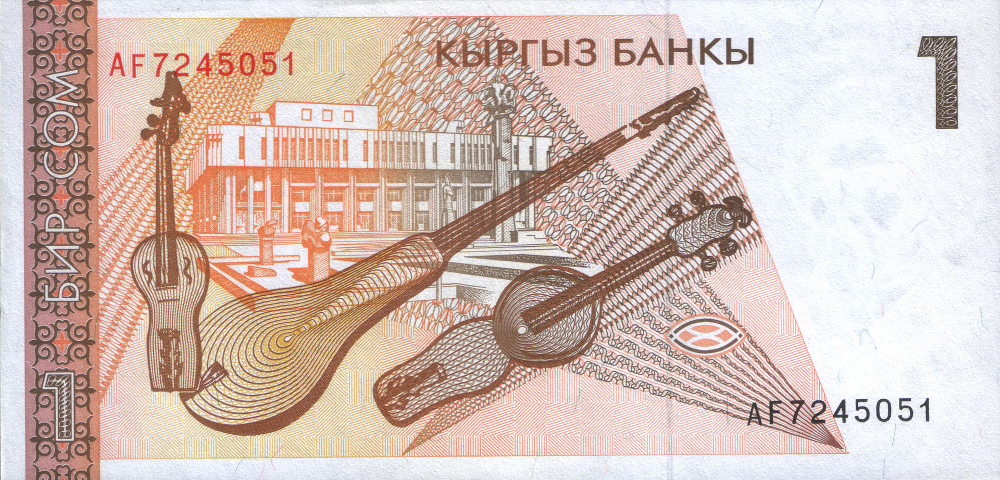
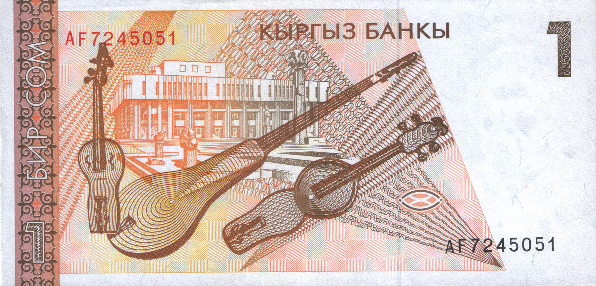
1 сом (11 апрель 1994)
Алдыңкы бетинде композитор Абдылас Малдыбаев (1906—1978). Артындагы бетинде музыкалык аспаптар комуз жана кыяк, Улуттук филармониянын имаратынын фонунда.


5 сом (11 апрель 1994)
Алдыңкы бетинде балерина Бюбюсара Бейшеналиева (1926—1973). Артындагы бетинде Улуттук опера жана балет театрынын имараты.


10 сом (28 январь 1994)
Алдыңкы бетинде илимпоз жана маданият ишмери Касым Тыныстанов (1901—1938). Артындагы бетинде Кыргызстандын тоо кыркалары жана Жети-Өгүз капчыгайы.


20 сом (11 апрель 1994)
Алдыңкы бетинде акын жана манасчы Тоголок Молдо (1860—1942). Артындагы бетинде Манастын мавзолейи.
 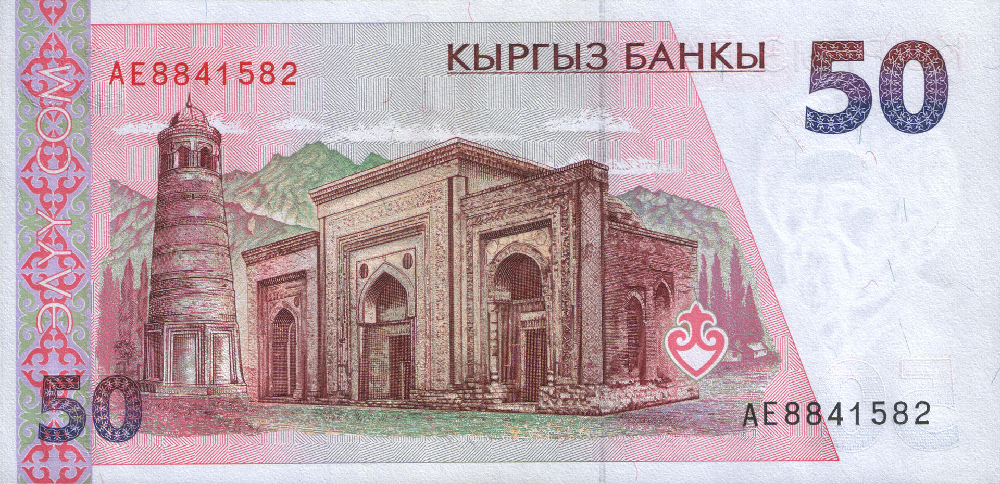
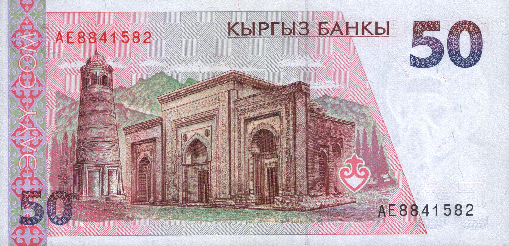
50 сом (29 август 1994)
Алдыңкы бетинде алайлык кыргыздардын башкаруучусу Курманжан Датка (1811—1907). Артындагы бетинде Өзгөн архитектуралык комплекси (мечит жана Карахандар мавзолейи).

100 сом (20 март 1995)
Алдыңкы бетинде Кыргызстандын эл акыны Токтогул Сатылганов (1864—1933). Артындагы бетинде Токтогул ГЭСинин плотинасы.


1 сом (7 февраль 2000)
Алдыңкы бетинде композитор Абдылас Малдыбаев (1906—1978). Артындагы бетинде комуз менен кыяк музыкалык аспаптары, Улуттук филармониянын имаратынын фонунда.

5 сом (17 декабрь 1997)
Алдыңкы бетинде балерина Бюбюсара Бейшеналиева (1926—1973). Артындагы бетинде Улуттук опера жана балет театрынын имараты.
10 сом (17 декабрь 1997)
Алдыңкы бетинде илимпоз жана маданият ишмери Касым Тыныстанов (1901—1938). Артындагы бетинде Кыргызстандын тоо кыркалары жана Жети-Өгүз капчыгайы.
 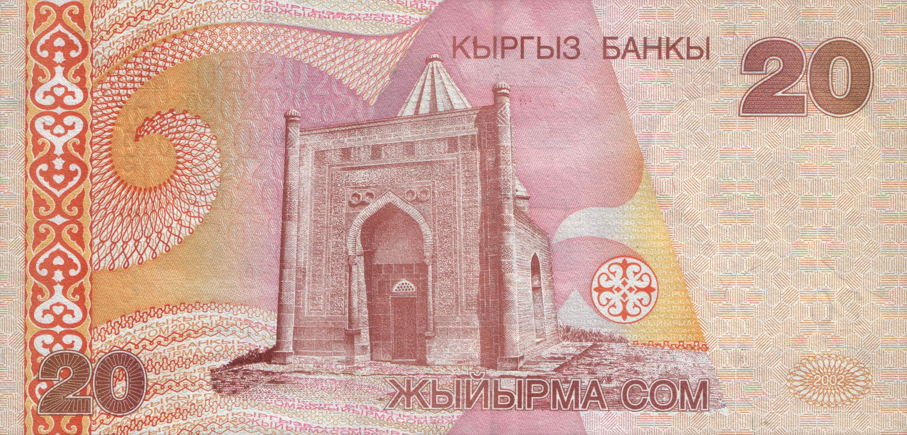
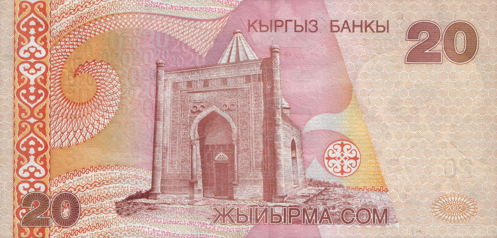
20 сом (15 август 2002)
Алдыңкы бетинде акын жана манасчы Тоголок Молдо (1860—1942). Артындагы бетинде Манастын мавзолейи.


50 сом (15 август 2002)
Алдыңкы бетинде алайлык кыргыздардын башкаруучусу Курманжан Датка (1811—1907). Артындагы бетинде Өзгөн архитектуралык комплекси (мечит жана Карахандар мавзолейи).

100 сом (15 август 2002)
Алдыңкы бетинде Кыргызстандын эл акыны Токтогул Сатылганов (1864—1933). Артындагы бетинде Хан-Теңири тоосу.
200 сом (28 август 2000)
Алдыңкы бетинде акын жана драматург Алыкул Осмонов (1915—1950). Артындагы бетинде Ысык-Көл көлү, Осмоновдун «Жеңишбек» поэмасынан үзүндү.
 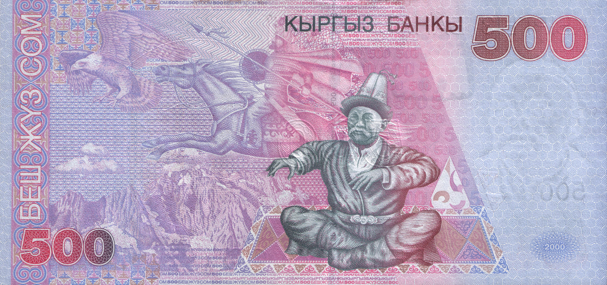
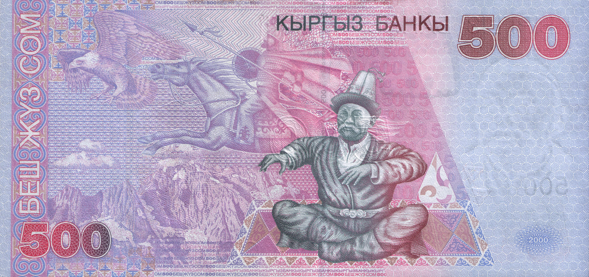
500 сом (28 август 2000)
Алдыңкы бетинде акын жана манасчы Саякбай Каралаев (1894—1971). Артындагы бетинде эпостон алынган образдардын фонунда Манасты айтып жаткан Каралаев.

1000 сом (28 август 2000)
Алдыңкы бетинде жазуучу Юсуф Баласагын (XI кылым). Артындагы бетинде Сулайман-Тоонун фонундагы Тахты Сулайман мечити, кыргызча «Ошко үч миң жыл» деген жазуу.


20 сом (1-июль 2009)
Алдыңкы бетинде комуз; акын жана манасчы Тоголок Молдо (1860–1942). Артындагы бетинде Кыргызстандын тоо кыркалары, Таш-Рабат архитектуралык эстелиги.

50 сом (1-июль 2009)
Алдыңкы бетинде алайлык кыргыздардын башкаруучусу Курманжан Датка (1811–1907), Өзгөн архитектуралык комплексиндеги мунара. Артындагы бетинде Өзгөн архитектуралык комплекси (мечит жана Карахандар мавзолейи).

100 сом (1-июль 2009)
Алдыңкы бетинде Кыргызстандын эл акыны Токтогул Сатылганов (1864–1933). Артындагы бетинде Токтогул ГЭСинин плотинасы.


200 сом (1-декабрь 2010)
Алдыңкы бетинде акын жана драматург Алыкул Осмонов (1915–1950). Артындагы бетинде Ысык-Көл, Осмоновдун «Жеңишбек» поэмасынан үзүндү.


500 сом (1-декабрь 2010)
Алдыңкы бетинде акын жана манасчы Саякбай Каралаев (1894–1971). Артындагы бетинде Манастын мавзолейи.


1000 сом (1-декабрь 2010)
Алдыңкы бетинде жазуучу Юсуф Баласагын (XI кылым). Артындагы бетинде Сулайман-Тоонун фонунда Тахты Сулайман мечити.
5000 сом (2-март 2009)
Алдыңкы бетинде кыргыз советтик актёру Сүймөнкул Чокморов (1939–1992). Артындагы бетинде «Ала-Тоо» кинотеатры (Бишкек), Кыргыз тоо кыркасы.
 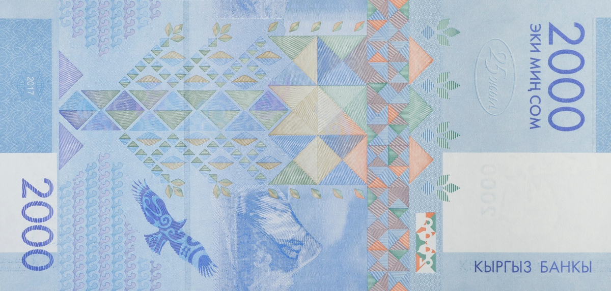
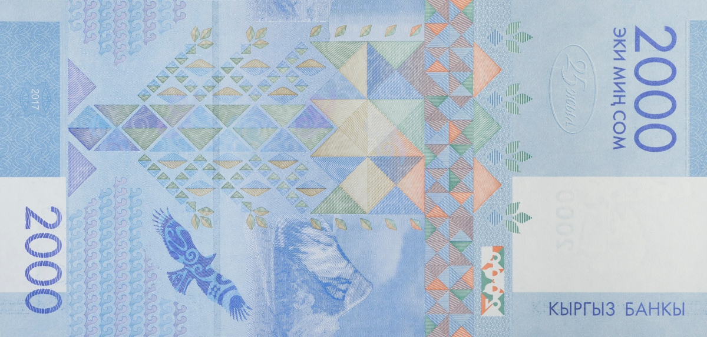
2000 сом (2-март 2009)
Алдыңкы бетинде Бишкек шаарындагы Манас Даңктуу эстелиги, боз үй. Артындагы бетинде «Турук өмүр дарагы» кинотеатры, бүркүт учуп бараткан пейзаж, Хан-Теңири жана Ысык-Көлдүн фонунда.
20 сом (14-февраль 2024)
Алдыңкы бетинде акын жана манасчы Тоголок Молдо (1860–1942). Артындагы бетинде Кыргызстандын тоо кыркалары, Таш-Рабат архитектуралык эстелиги.
50 сом (14-февраль 2024)
Алдыңкы бетинде алайлык кыргыздардын башкаруучусу Курманжан Датка (1811–1907). Артындагы бетинде Өзгөн архитектуралык комплекси (мечит жана Карахандар мавзолейи).
 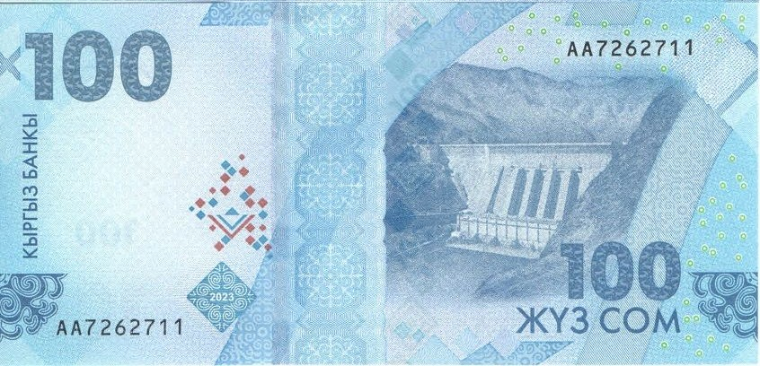
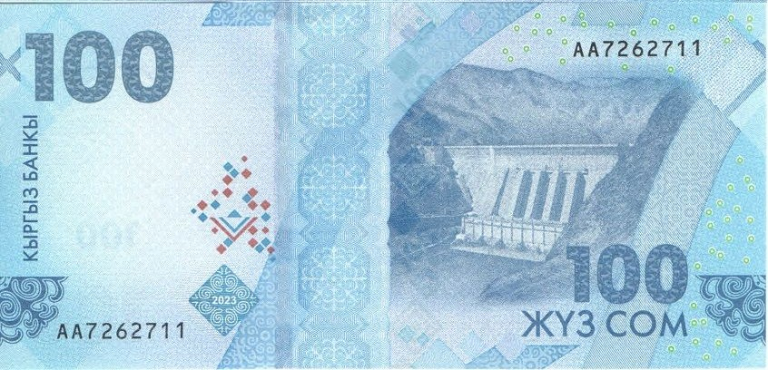
100 сом (14-февраль 2024)
Алдыңкы бетинде Кыргызстандын эл акыны Токтогул Сатылганов (1864–1933). Артындагы бетинде Таш-Көмүр ГЭСинин плотинасы.


200 сом (10-май 2023)
Алдыңкы бетинде акын жана драматург Алыкул Осмонов (1915–1950). Артындагы бетинде тоо чокуларынын фонундагы Ысык-Көл.


500 сом (10-май 2023)
Алдыңкы бетинде акын жана манасчы Саякбай Каралаев (1894–1971). Артындагы бетинде Манастын мавзолейи.


1000 сом (10-май 2023)
Алдыңкы бетинде жазуучу Юсуф Баласагын (XI кылым). Артындагы бетинде Сулайман-Тоонун фонундагы Тахты Сулайман мечити.
 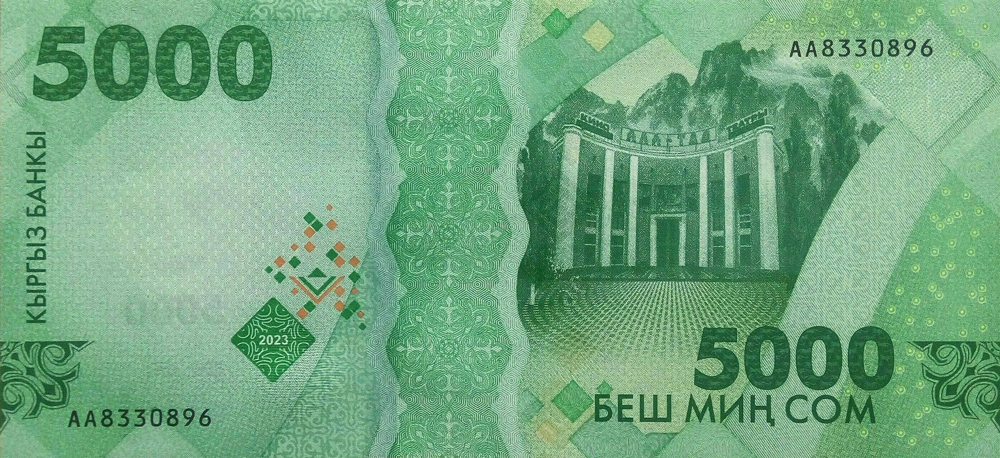
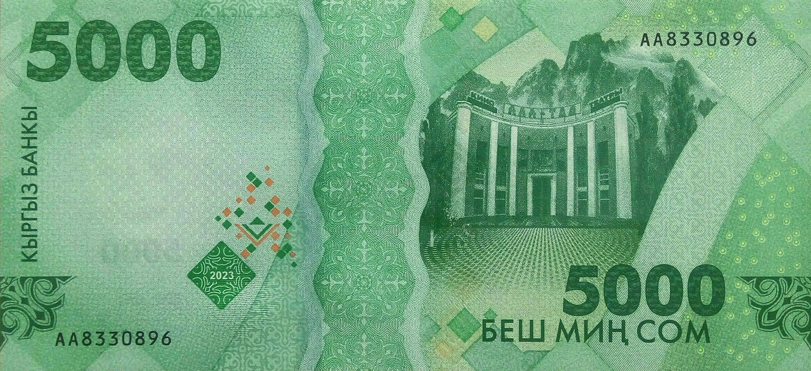
5000 сом (10-май 2024)
Алдыңкы бетинде кыргыз советтик актёру Сүймөнкул Чокморов (1939–1992). Артындагы бетинде «Ала-Тоо» кинотеатры (Бишкек), Кыргыз тоо кыркасы.